01 / 10 ·
ANÈL HENNING
IT AUDITOR
Seeking evidence 24/7!
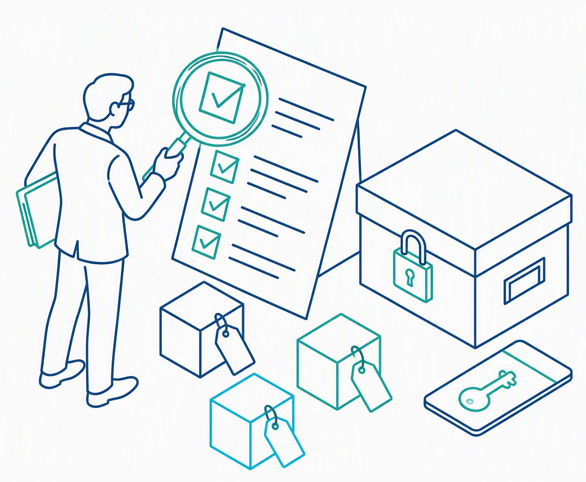
The evidence companion to the template package
How an auditor proves a control works
Eleven evidence principles, each drawn, explained, tied to the template where it is applied, and tested against a real case.
i
Before you start
Evidence is the product of an audit
The template package tells an auditor what to document. This book shows how to prove it. Each principle is my own sketch, explained step by step, linked to the Logical Coders template where it is applied, and tested against a real event that shows what happened when it failed.
Read it beside the Compliance Analyst book: the blue Lives in tag on each page points to the template that puts the principle to work.
“
Auditors gather evidence by inspecting documents, observing work, asking questions, recalculating, and re-performing a control themselves.
Paraphrasing PCAOB AS 1105 (n.d.-c)
Contents
| No. | Principle | Applied in | Page |
|---|---|---|---|
| 01 | Sufficient and Appropriate Evidence Relevant, reliable, enough, supported | T03 checklist | 3 |
| 02 | Three Assessment Methods Examine, interview, test | T01 test procedure | 3 |
| 03 | Evidence Strength Ladder Spoken answer → auditor-run | T08 evidence | 4 |
| 04 | Seven Ways to Collect Evidence Inspection through analytics | T03 request list | 4 |
| 05 | Evidence Collection Journey Plan → request → … → protect | All templates | 5 |
| 06 | Testing a System Report Completeness and accuracy | T08, T09 | 6 |
| 07 | Picking a Fair Sample 240 changes → seed → 25 tested | T08 sample method | 6 |
| 08 | Protecting Evidence Minimum necessary, MFA, no secrets | Evidence rule | 7 |
| 09 | Common Evidence Mistakes Six mistakes and their fixes | T03 checklist | 7 |
| 10 | Worked Example: Leaver Access Test HR list + export → query | T09, T08 | 8 |
| 11 | Continuous Evidence Collection Collect, timestamp, review, flag | T07, T10 | 9 |
ANÈL HENNING · IT AUDITORLogical Coders · 02
1
Sufficient and Appropriate Evidence
Lives in · Template 03 checklistThe PCAOB rule: relevant, reliable, enough, and a supported conclusion
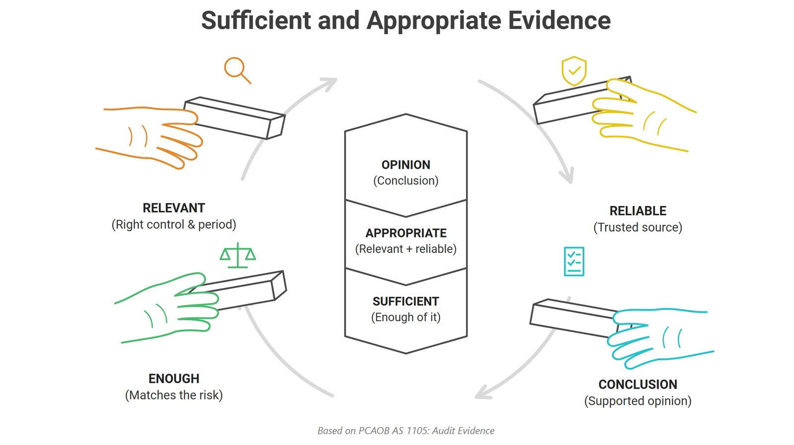
CAPTION Sufficient and Appropriate Evidence (2026)
Evidence is appropriate when it is relevant — the right control and the right period — and reliable because it comes from a trusted source. It is sufficient when there is enough of it to match the risk. Only then can it support a conclusion. Evidence received directly from an independent outside source is more reliable than evidence passed through the people being audited (PCAOB, n.d.-c).
When it fails · Satyam, 2009
Auditors accepted bank confirmations passed via management
Satyam’s founder admitted inflating cash and bank balances by about $1 billion. The SEC found the auditors had accepted confirmations through Satyam’s management instead of directly from the banks, giving management the chance to fake them; the firms paid a $6 million penalty (SEC, 2011).
2
Three Assessment Methods
Lives in · Template 01 test procedureNIST: examine, interview, test
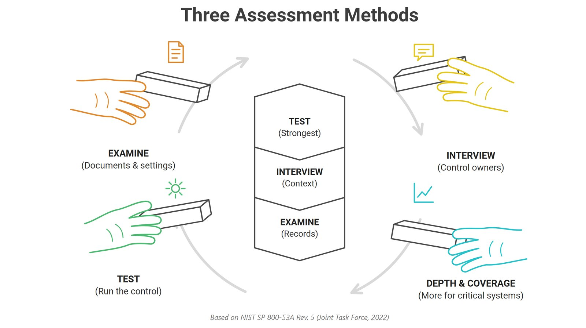
CAPTION Three Assessment Methods (2026)
Examine reviews documents and settings. Interview asks control owners for context. Test runs the control and is the strongest of the three. Critical systems deserve more depth and coverage — more methods, more items (Joint Task Force, 2022). In the Audit Program, every test-procedure cell names which method is used.
When it fails · First American, 2019
Test results never reached executives
A January 2019 penetration test found a flaw exposing customer documents, but it was not fixed on time. In May a journalist reported the exposure. The SEC found senior executives were never told of the earlier test result; the company paid $487,616 (SEC, 2021). The test worked — the reporting did not.
ANÈL HENNING · IT AUDITORLogical Coders · 03
3
Evidence Strength Ladder
Lives in · Template 08 evidence columnFive steps from a spoken answer up to auditor-run
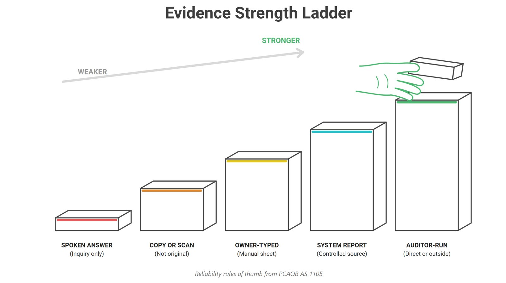
CAPTION Evidence Strength Ladder (2026)
Evidence gets stronger as it moves away from memory and toward the system: a spoken answer, a copy or scan, an owner-typed sheet, a system report, and finally a test the auditor runs directly. Asking questions alone never proves a control works (PCAOB, n.d.-a) — which is why my AC-2 test re-performs the review in code.
When it fails · WorldCom, 2002
Auditors traced entries instead of accepting explanations
Cynthia Cooper’s internal audit team found large entries moving operating expenses into capital accounts. When managers offered explanations, the team did not accept them; they traced the entries to supporting records, found none, and uncovered $3.8 billion in misstated expenses (Cooper, 2008).
4
Seven Ways to Collect Evidence
Lives in · Template 03 request listInspection through analytics, each with its own icon
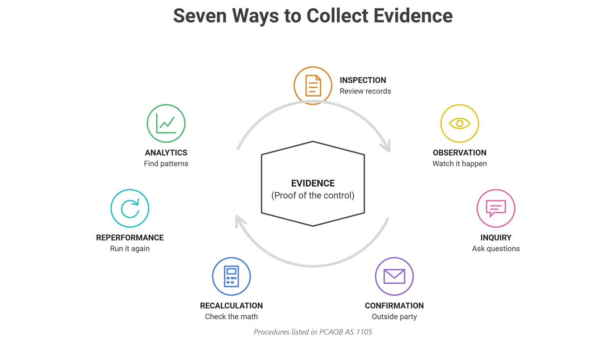
CAPTION Seven Ways to Collect Evidence (2026)
Inspection reviews records. Observation watches the work happen. Inquiry asks questions. Confirmation checks with an outside party. Recalculation redoes the math. Reperformance runs the control again. Analytics finds patterns across data (PCAOB, n.d.-c). Each evidence request in the Fieldwork Packet states which procedure it supports.
When it fails · Morgan Stanley, 2016
A vendor was trusted without checking its work
Closing two data centers, the firm hired a vendor to destroy devices holding customer data but did not oversee it (OCC, 2020b). Devices were resold with data on about 15 million customers (SEC, 2022). Inspecting destruction certificates against serial numbers — or observing the work — would have closed the gap.
ANÈL HENNING · IT AUDITORLogical Coders · 04
5
Evidence Collection Journey
Lives in · Every templatePlan → Request → Receive → Validate → Test → Document → Protect
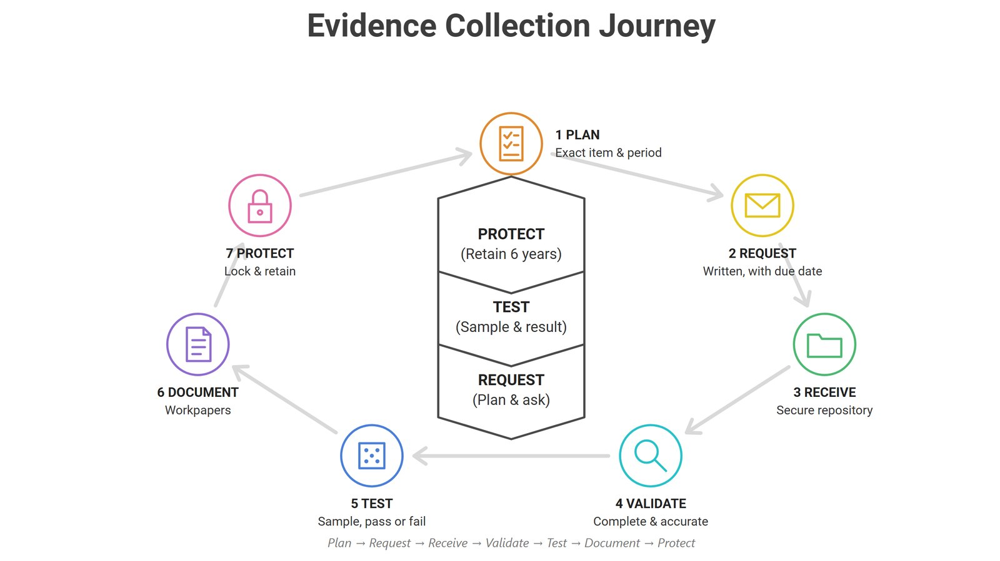
CAPTION Evidence Collection Journey (2026)
Where each step happens in the package
1
PlanExact item and periodTemplate 02 · Audit Plan
2
RequestWritten, with a due dateTemplate 03 · request list
3
ReceiveThrough the secure repositoryTemplate 03 · received
4
ValidateComplete and accurateTemplate 03 · acceptance checklist
5
TestSample, pass or failTemplate 08 · effectiveness report
6
DocumentWorkpapersTemplate 12 · document register
7
ProtectLock and retain six yearsEvidence rule · § 164.316
When it fails
Step 7
Arthur Andersen, 2001
The journey only counts if the last step holds. As investigations into Enron began, its audit firm destroyed large amounts of documents. The firm collapsed, and Congress made destroying audit records a crime (Arthur Andersen LLP v. United States, 2005; Sarbanes-Oxley Act, 2002). HIPAA keeps security documentation for six years (§ 164.316).
ANÈL HENNING · IT AUDITORLogical Coders · 05
6
Testing a System Report
Lives in · Templates 08 and 09Check completeness and accuracy before relying on it
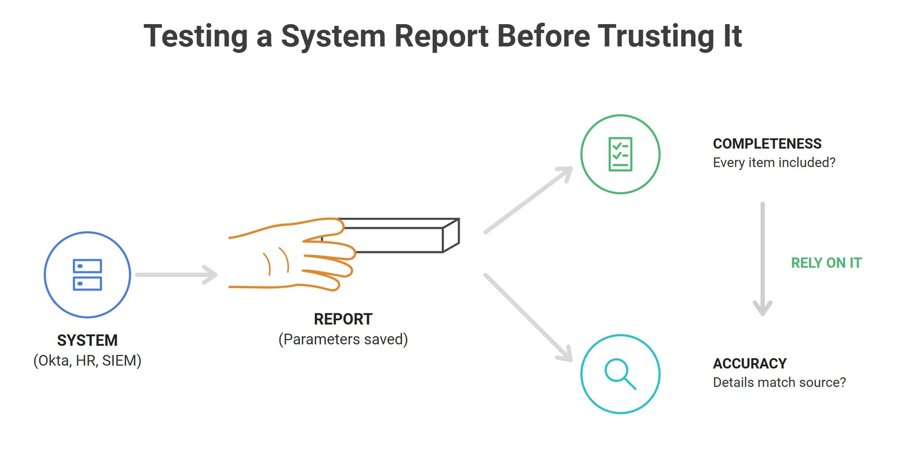
CAPTION Testing a System Report Before Trusting It (2026)
Before relying on a report from Okta, HR or a SIEM, save the parameters that produced it, then test completeness — is every item included? — and accuracy — do the details match the source? Only then rely on it (PCAOB, n.d.-c). My Account Lifecycle Review starts by reconciling the roster count to the HR system.
When it fails · Equifax, 2017
The scan report missed a system
After the Apache Struts alert, Equifax ran a scan to find affected systems. The scan did not identify the vulnerable one, so the patch was never applied, and attackers stole data on 145 million people (GAO, 2018). Comparing the scan’s system list to the asset inventory would have revealed the missing system.
7
Picking a Fair Sample
Lives in · Template 08 sample methodPopulation, random seed and sample
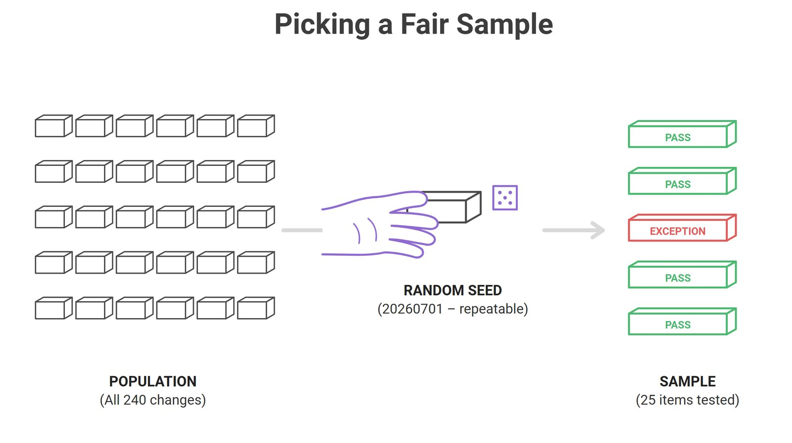
CAPTION Picking a Fair Sample (2026)
Start with the full population — all 240 changes in the period. Use a random seed so the selection is repeatable, then test the sample: 25 items, one exception. If the population is missing items, even a perfect sample can miss the real problem, so auditors first compare the record count to the source system (PCAOB, n.d.-b, n.d.-c).
When it fails · Colonial Pipeline, 2021
An account outside the review population
Attackers entered Colonial’s network through an old VPN account that was no longer used and did not require multi-factor authentication. The pipeline shut down for days, causing fuel shortages on the East Coast (U.S. Senate Committee on Homeland Security and Governmental Affairs, 2021).
ANÈL HENNING · IT AUDITORLogical Coders · 06
8
Protecting Evidence
Lives in · Evidence rule · all 12 templatesMinimum necessary, MFA, no secrets, restricted access
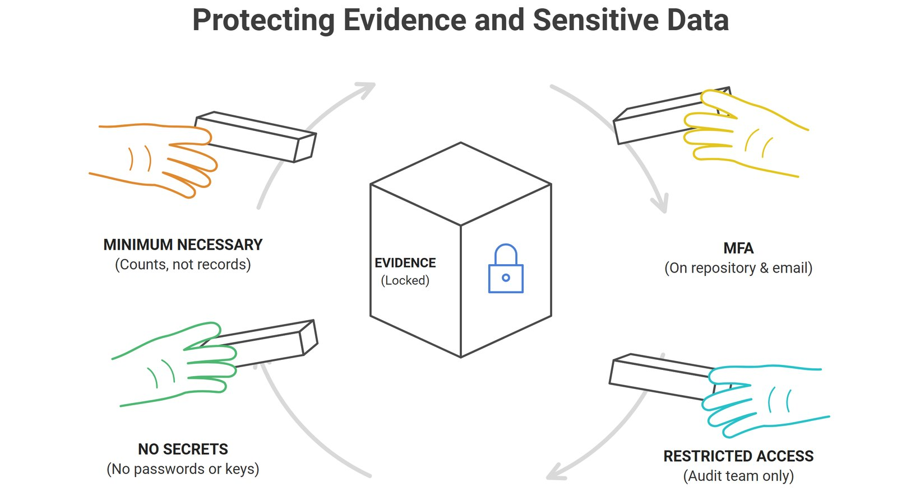
CAPTION Protecting Evidence and Sensitive Data (2026)
Collect the minimum necessary — counts, not patient records. Put MFA on the repository and email. Keep no secrets — no passwords or keys — in workpapers, and restrict access to the audit team (§ 164.502; § 164.312). This is the evidence-handling rule printed on every Logical Coders template.
When it fails · Deloitte, 2017
The auditor’s own email was breached
Attackers entered Deloitte’s email system through an administrator account without two-factor authentication and viewed confidential client emails (Hopkins, 2017). Because audit firms hold sensitive client data, a breach of the auditor’s systems exposes the client too.
9
Common Evidence Mistakes
Lives in · Template 03 acceptance checklistSix mistakes that weaken evidence, and the fix for each
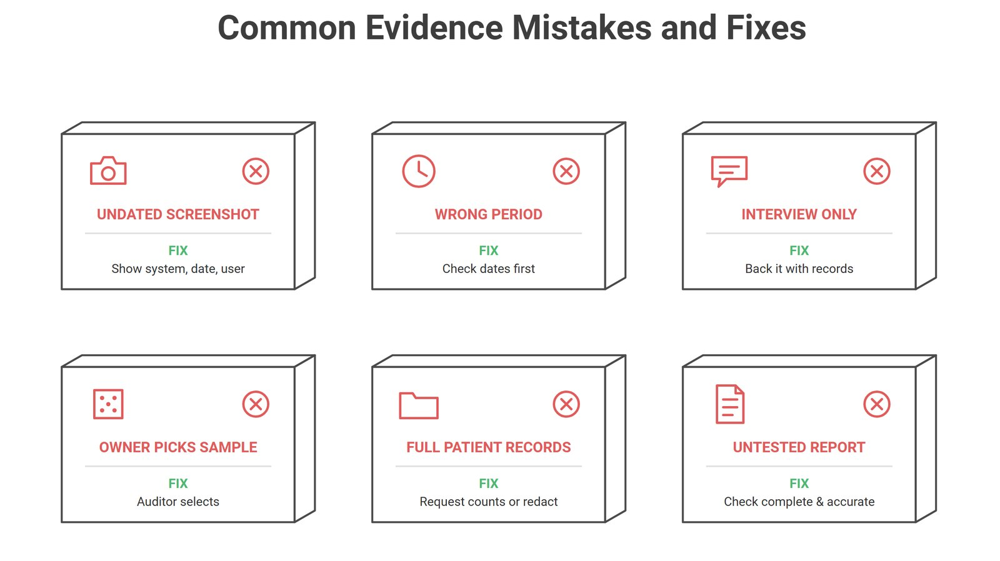
CAPTION Common Evidence Mistakes and Fixes (2026)
An undated screenshot cannot be traced — show the system, date and user. Wrong-period evidence proves nothing, so check dates first. An interview alone must be backed by records. A sample the owner picks can hide problems; the auditor selects it. Full patient records collect too much; request counts or redact. An untested report must be checked first (PCAOB, n.d.-a, n.d.-b).
When it fails · Prevention
Each mistake maps to one acceptance check
The seven-item evidence acceptance checklist in Template 03 exists to catch exactly these six mistakes before evidence is accepted: right system, right period, named performer, complete and traceable, sensitive data minimized, source and date recorded, stored in the approved repository.
ANÈL HENNING · IT AUDITORLogical Coders · 07
10
Worked Example: Leaver Access Test
Lives in · Templates 09 and 08HR terminations + account export → query → pass or exception
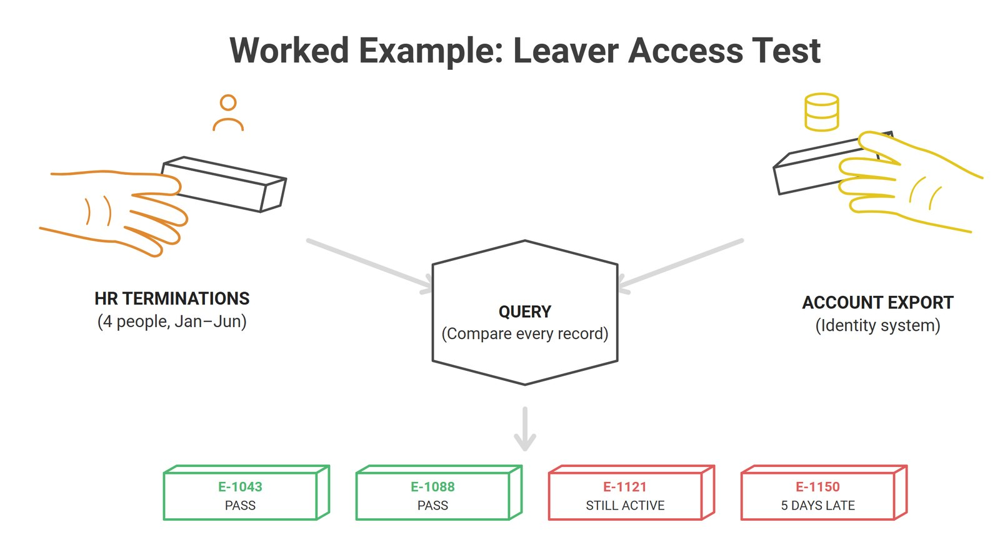
CAPTION Worked Example: Leaver Access Test (2026)
How the test works
1Two independent lists. HR says who left; the identity system says who still has access.
2Compare every record — a full population, not a sample.
3Measure the gap between termination and disable date against the 1-day standard.
4Log each exception to the tracker with an owner and due date.
The same test in my capstone · Sunshine Dental (fictional)
$ python ac2_account_review.py TEST 1 - Leavers disabled within 1 day E-1015 terminated 2026-04-03 -> Pass E-1017 terminated 2026-04-08 -> EXCEPTION disabled 19 days late TEST 2 - Shared accounts FRONTDESK -> EXCEPTION - shared login Records: 8 accounts, 5 roster | Exceptions: 7
Full output and SQL: Compliance Analyst book, Template 09
When it fails
8.2M
Cash App customers
In April 2022, Block reported that a former employee downloaded reports on about 8.2 million Cash App Investing customers after their employment ended; the access was never removed (Block, Inc., 2022). Removing access at exit is basic account management (NIST, 2020), and a leaver test is designed to catch exactly this account.
ANÈL HENNING · IT AUDITORLogical Coders · 08
11
Continuous Evidence Collection
Lives in · Templates 07 and 10Collect, timestamp, auditor review and flag
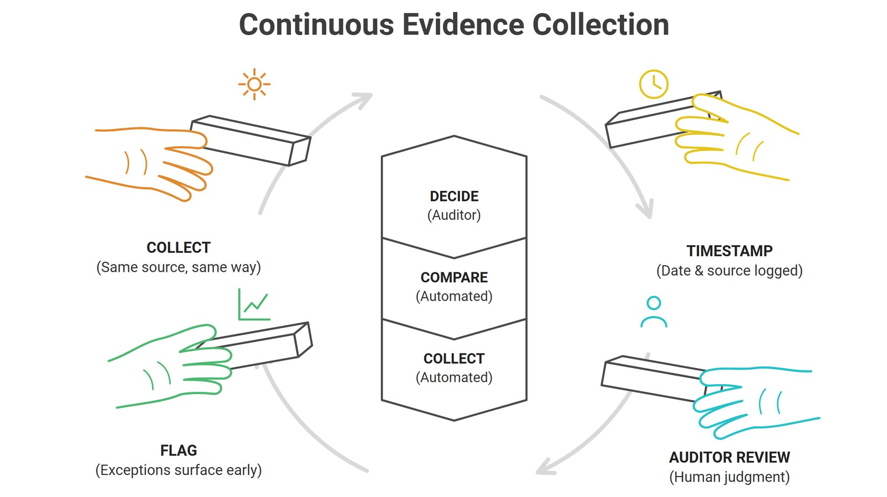
CAPTION Continuous Evidence Collection (2026)
Automation collects evidence the same way from the same source and timestamps it. Automation compares it to the rule. The auditor still decides, and exceptions are flagged early instead of found at year end. Continuous monitoring keeps an organization aware of its risks (Dempsey et al., 2011; NIST, 2020).
When it fails · Equifax, 2017
An expired certificate stopped the monitoring
Equifax’s traffic-inspection device had an expired certificate for months, so it was not inspecting traffic while data was stolen. The suspicious traffic was noticed only after renewal in July 2017 (GAO, 2018). Monitoring tools need monitoring too.
Three things to take from this book
01
Prove, don’t ask
Climb the strength ladder: re-perform the control instead of accepting an answer.
02
Trust the population
Test reports for completeness and accuracy before sampling from them.
03
Protect the proof
Collect the minimum, lock it down, and keep it for six years.
ANÈL HENNING · IT AUDITORLogical Coders · 09
ii
Sources
References
Arthur Andersen LLP v. United States, 544 U.S. 696 (2005).
Block, Inc. (2022, April 4). Form 8-K: Current report. U.S. Securities and Exchange Commission.
Cooper, C. (2008). Extraordinary circumstances: The journey of a corporate whistleblower. Wiley.
Dempsey, K., Chawla, N. S., Johnson, A., Johnston, R., Jones, A. C., Orebaugh, A., Scholl, M., & Stine, K. (2011). Information security continuous monitoring (ISCM) for federal information systems and organizations (NIST SP 800-137).
Hopkins, N. (2017, September 25). Deloitte hit by cyber-attack revealing clients’ secret emails. The Guardian.
Joint Task Force. (2022). Assessing security and privacy controls in information systems and organizations (NIST SP 800-53A Rev. 5).
National Institute of Standards and Technology. (2020). Security and privacy controls for information systems and organizations (NIST SP 800-53 Rev. 5).
Office of the Comptroller of the Currency. (2020b, October 8). OCC assesses $60 million civil money penalty against Morgan Stanley.
Public Company Accounting Oversight Board. (n.d.-a). AS 2201: An audit of internal control over financial reporting.
Public Company Accounting Oversight Board. (n.d.-b). AS 2315: Audit sampling.
Public Company Accounting Oversight Board. (n.d.-c). AS 1105: Audit evidence.
Sarbanes-Oxley Act of 2002, Pub. L. No. 107-204, 116 Stat. 745 (2002).
Security Standards: Documentation, 45 C.F.R. § 164.316 (2024).
Security Standards: Technical Safeguards, 45 C.F.R. § 164.312 (2024).
U.S. Government Accountability Office. (2018). Data protection: Actions taken by Equifax and federal agencies in response to the 2017 breach (GAO-18-559).
U.S. Securities and Exchange Commission. (2011, April 5). SEC charges India-based affiliates of PwC for role in Satyam accounting fraud.
U.S. Securities and Exchange Commission. (2021, June 15). SEC charges issuer with cybersecurity disclosure controls failures.
U.S. Securities and Exchange Commission. (2022, September 20). Morgan Stanley Smith Barney charged with failing to protect personal identifying information.
U.S. Senate Committee on Homeland Security and Governmental Affairs. (2021, June 8). Threats to critical infrastructure: Examining the Colonial Pipeline cyber attack.
Uses and Disclosures of Protected Health Information: General Rules, 45 C.F.R. § 164.502 (2024).
Anèl Henning · IT Auditor
Sample data is fictional. Case studies are drawn from the public sources above.
linkedin.com/in/anel-henning-quantum
anelhenning2-collab.github.io/portfolio
anelhenning2-collab.github.io/portfolio
ANÈL HENNING · IT AUDITORLogical Coders · 10
Illustrations are my own. Sample data is fictional; case studies come from the public sources cited in each piece.
Tip: use ← → to move between pages. Click any card or page reference to jump.
Tip: use ← → to move between pages. Click any card or page reference to jump.